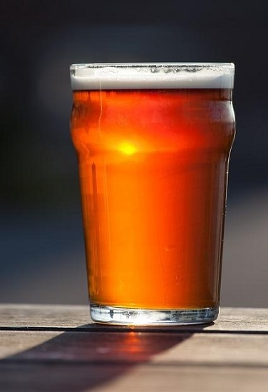
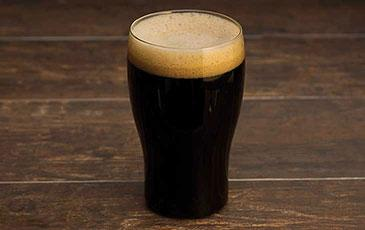

American Amber Americana de color ámbar, lupulada, de intensidad moderada, con un sabor maltoso a caramelo.
American Amber Americana de color ámbar, lupulada, de intensidad moderada, con un sabor maltoso a caramelo.
Golden Ale Rubia de estilo ingles, color dorado y excelente cuerpo gracias a la combinación de maltas pálidas y maltas acarameladas.
Porter Cerveza ligera y oscura, con sabores tostados, notas a chocolate / café, amargor moderado, sabor intenso, donde se destaca la malta y el lúpulo